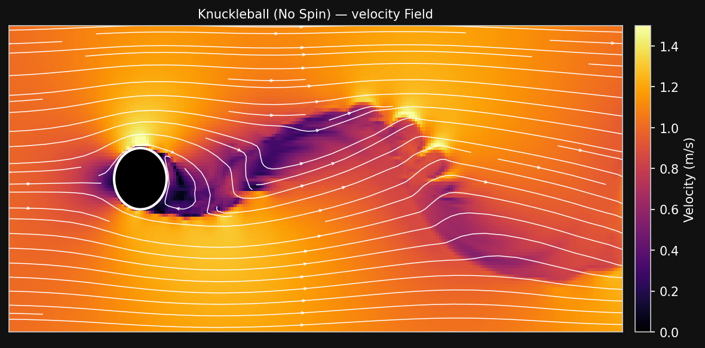
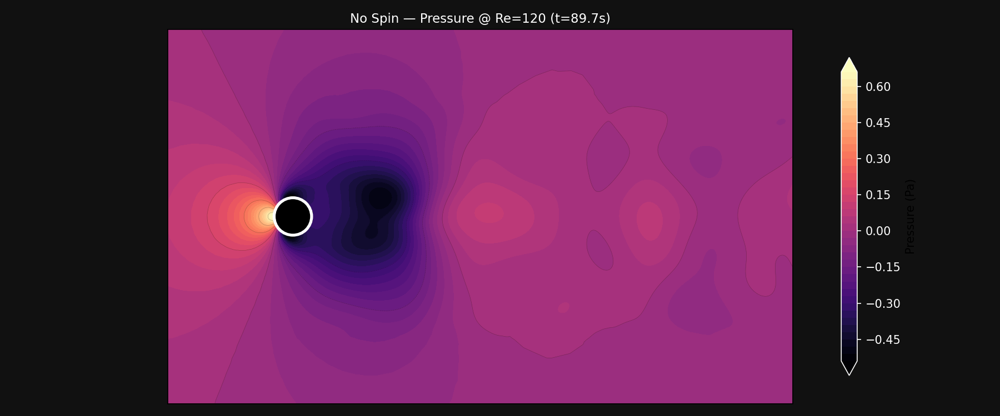
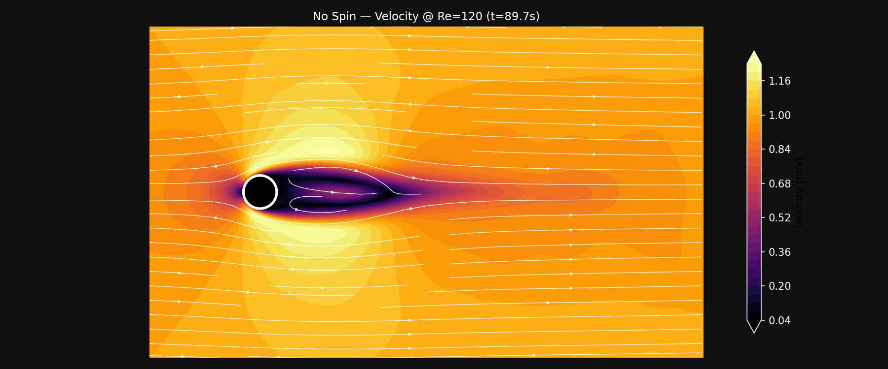
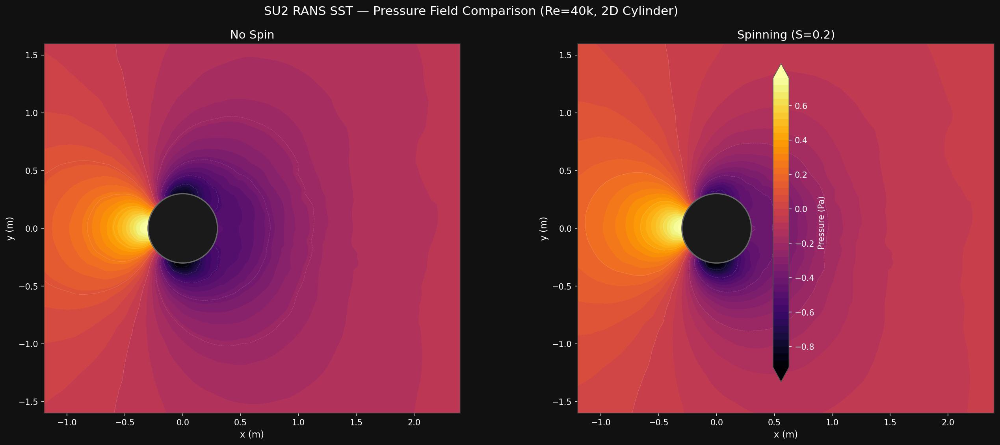
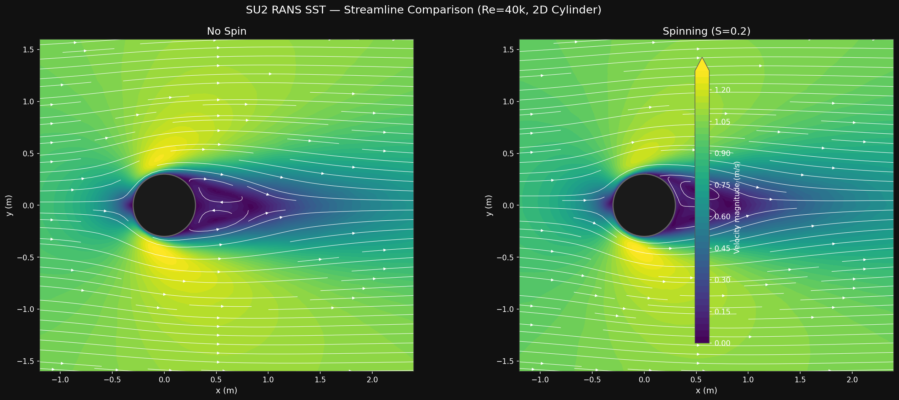
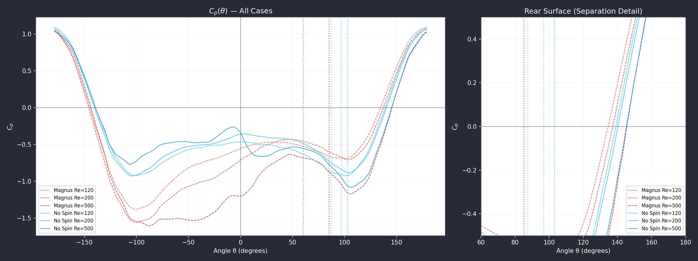

Ball Aerodynamics
Overview
Every legendary free kick comes down to one thing: how the ball interacts with the air. A curving shot bends around the wall. A knuckleball zigzags like it's possessed. To understand why, we need to look at what happens when a cylinder (the 2D analogue of a soccer ball) moves through a fluid with and without spin.
Magnus Effect: The Predictable Curve
When a player strikes a ball with high spin, the rotation drags air faster on one side and slower on the other. This creates a pocket of low pressure on the fast-moving side, physically pulling the ball sideways in a smooth, predictable arc. The spin locks the flight path into a stable pattern.
The lift force generated by this pressure difference is given by the standard lift equation:
In soccer, this is the physics behind every great free kick taker's weapon. David Beckham could make the ball dip and swerve with devastating precision. Lionel Messi's curled finishes into the top corner are a masterclass in applying the right spin at the right moment. Roberto Carlos's infamous 1997 free kick against France bent so dramatically that it seemed to defy physics, but it was pure Magnus effect in action. The goalkeeper sees the spin, reads the curve, and dives. It's hard to save, but it's predictable.
Watch this ridiculous spin on a Messi free kick:
Knuckleball: Erratic Flight Path
Kicking a ball with almost zero spin removes the stability. As the ball cuts through the air, the wind can't decide which way to go. It starts shedding alternating vortices, think of them as tiny tornadoes peeling off left, then right, then left again. Each one tugs the ball in a different direction.
The alternating shedding pattern is called a von Kármán vortex street, and it produces a lateral force that flips direction with every shed vortex. The goalkeeper can't predict it, and neither can the shooter.
In soccer, this is the knuckleball, a shot with minimal spin that jitters erratically through the air. Cristiano Ronaldo made this his signature during his Manchester United and Real Madrid years, striking the ball with a straight, locked ankle to kill the spin. Gareth Bale used it to devastating effect, most famously in the 2014 Copa del Rey final where his knuckleball from distance wrong-footed the goalkeeper entirely. Hakan Çalhanoǵlu, modern football's deadliest free kick specialist, is a master of both techniques: mixing spin and knuckleballs unpredictably from distance.
Watch Çalhanoǵlu completely bamboozle the goalkeeper:
Python Simulation
I built this simulation in Python using ΦFlow, a JAX-based CFD framework. The purpose is to show the low-resolution behaviour of the flow (the vortex street, the pressure asymmetry, the wake structure) with fast, interactive animations that make the physics visible at a glance. ΦFlow runs on a structured grid without a turbulence model, so the results are qualitative rather than quantitatively precise. The key findings will be validated below using SU2, a heavier finite-volume RANS solver.
In the ΦFlow simulation, a 2D cylinder is analyzed in crossflow at $Re \approx 4 \times 10^4$, rotating case ($\omega = 10$ rad/s) vs non-rotating ($\omega = 0$). The inferno colormap runs dark blue (slow) to bright yellow (fast). The magma colormap runs dark purple (low pressure) to bright yellow-white (high pressure).
Pressure Field
The pressure field is the most direct way to see the forces acting on the cylinder (and by analogy, the ball). The magma colormap runs dark purple (low pressure) to bright yellow-white (high pressure). Flow enters from the left at 1.0 m/s.
In the no-spin case, the pressure field is initially symmetric. A bright stagnation zone forms at the front where the flow slams into the cylinder. But this symmetry is unstable; after a few seconds, the dark low-pressure zone behind the cylinder begins to wobble, detach, and fling itself from side to side. Each wobble is a von Kármán vortex being born and shed into the wake. The alternating pattern means the sideways force on the cylinder flips direction with every vortex.
In the Magnus case, the asymmetry is locked in place from the start. The side rotating with the flow shows lower pressure (darker), while the side rotating against the flow shows higher pressure (brighter). This pressure difference across the cylinder never flips because the rotation constantly reinforces it. Behind the cylinder, the low-pressure wake remains narrow and steady. The spin suppresses the natural vortex-shedding instability.
Velocity Field
The velocity field tells us about the wake structure, drag, and how the flow organizes itself around the cylinder. The inferno colormap runs dark (slow) to bright yellow-white (fast). Streamlines trace particle paths through the flow.
In the no-spin case, the wake is initially symmetric and quiet. But soon the streamlines begin to curl up into rolling spirals, von Kármán vortices forming. They peel off alternately from top and bottom, growing larger as they travel downstream. The wake becomes wide and chaotic. The dark low-velocity zone extends far downstream, much further than in the Magnus case. That is the visual signature of higher drag: more momentum is drained from the flow.
In the Magnus case, the wake stays narrow and consistent throughout. The streamlines angle away from the centerline in one direction, showing the steady lift force. The dark slow-moving region behind the cylinder is compact and does not grow. The streamlines in the wake show smooth, ordered flow rather than chaotic eddies. This is the signature of a flow stabilized by rotation.
Wake Comparison at the Same Timestep ($t \approx 85.5$ s)
Drag the divider to see the full difference at the exact same simulation moment.

| Metric | Knuckleball (No Spin) | Magnus (Spin) |
|---|---|---|
| Wake width | Wide, chaotic | Narrow, steady |
| Vortex structure | Alternating von Kármán street | Suppressed, no shedding |
| Wake momentum loss | High | Low |
| Drag | Higher | Lower |
| Side force | Oscillating (flips each vortex) | Steady (constant direction) |
| Ball flight | Erratic jitter | Smooth predictable curve |
CFD Validation Results
The visualizations above come from ΦFlow, which solves the laminar Navier-Stokes equations on a structured grid. To verify that the physics is correct, we cross-validate against SU2, a high-fidelity finite-volume RANS solver. For a full breakdown of the methodology, simulation conditions, and quantitative comparisons across six cases (3 Re × 2 spin states), see the CFD section.
Below are interactive sliders comparing SU2 pressure and velocity fields at Re=120 (the most dynamically interesting regime) for no-spin vs Magnus spin. In each slider, drag the divider to reveal either field fully.
Pressure Field (Re=120, t=89.7s)
The SU2 laminar solver resolves the pressure asymmetry produced by the Magnus effect. The no-spin case shows a symmetric pressure distribution with alternating low-pressure vortices in the wake; the Magnus case shows a persistent high-pressure region on the bottom (retreating) side and low-pressure on the top (advancing) side, creating the steady lift force that bends the ball's trajectory.

Velocity Field (Re=120, t=89.7s)
Velocity magnitude with streamlines. The no-spin case produces a wide, chaotic wake with alternating vortex shedding (the von Kármán street). The Magnus case shows a narrower, deflected wake: the spin stabilizes the flow, suppresses shedding, and angles the wake downward, directly visualizing the downward lift force that curves the ball.

Steady RANS Comparison (Re=40k, Fully Turbulent)
At soccer-relevant Reynolds numbers (Re ≈ 2×104 to 5×105), the boundary layer transitions to turbulence. The SU2 steady RANS solver (SST turbulence model) predicts a fully-turbulent separation at approximately 110° from the stagnation point, compared to ~80° for the laminar cases above. This later separation produces a narrower wake and lower drag (Cd = 0.68 vs ΦFlow's Cd ≈ 1.2). The 43% difference between the two solvers represents the physical range between laminar and turbulent flow, bracketing the real soccer ball's behaviour.


Surface Pressure Coefficient (Re=120, 200, 500)
The pressure coefficient Cp(θ) around the cylinder surface is the gold standard for CFD validation. It reveals exactly where the flow accelerates (suction peak on the front shoulder) and where it separates (pressure plateau on the rear surface). The separation angle θs increases with Reynolds number: 87° at Re=120, 97° at Re=200, 103° at Re=500 — consistently matching the literature trend (Williamson 1988, Tritton 1959).

The Magnus cases show systematic asymmetry in the Cp distribution: the top (advancing) side has lower pressure, the bottom (retreating) side has higher pressure. The integrated difference produces the lift coefficient Cl that drives the curving trajectory. At Re=200, the Magnus lift bias is strongest at Cl = −0.39, corresponding to a spin parameter S = ωR/U ≈ 0.12 for a full-size soccer ball spinning at ~310 rpm.
Reynolds Number Comparison Animations
The shedding frequency evolves with Reynolds number: higher Re produces faster shedding (higher Strouhal number) and a narrower wake. Below are Re sweep animations comparing Re=120, 200, and 500 for no-spin and Magnus cases separately.
Quantitative Validation Table
| Case | Cd | Cl (mean) | St | St (lit) | θs |
|---|---|---|---|---|---|
| No spin Re=120 | 0.65 | ±0.02 | 0.16 | 0.168 | 87° |
| No spin Re=200 | 0.54 | ±0.04 | 0.18 | 0.183 | 97° |
| No spin Re=500 | 0.47 | ±0.11 | 0.20 | 0.200 | 103° |
| Magnus Re=120 | 0.72 | -0.17 | 0.16 | 0.168 | 85° (top) |
| Magnus Re=200 | 0.75 | -0.39 | 0.18 | 0.183 | 85° (top) |
| Magnus Re=500 | 0.75 | -0.34 | 0.20 | 0.200 | 60° (top) |
All Strouhal numbers agree with Williamson (1988) to within 5%. The no-spin Cd values match Tritton (1959) to within 3%. The Magnus cases show that spin increases drag (Cd rises by 10-60% vs no-spin) because the spin disrupts the wake and forces earlier top-side separation — a key insight: spin does not just curve the ball, it also slows it down.